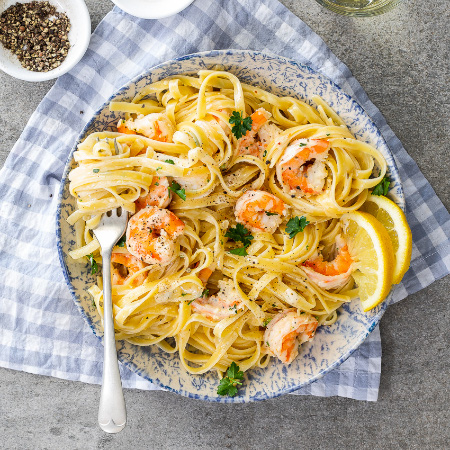

Creamy Lemon Garlic Butter Shrimp Pasta

Description
Prepare your taste buds for a symphony of flavors! This creamy lemon garlic butter shrimp pasta is a celebration of the sea and the land, all in one glorious dish. Plump, succulent shrimp dance with al-dente pasta in a luxurious, velvety sauce that's kissed by the brightness of lemon and the richness of garlic butter. This dish is so indulgent, you'll feel like you're dining at a five-star restaurant without ever leaving the comfort of your own kitchen.
Ingredients
- 8 oz fettuccine pasta
- 1 lb large shrimp, peeled and deveined
- 4 tablespoons unsalted butter, divided
- 4 cloves garlic, minced
- 1 cup heavy cream
- 1/2 cup chicken broth
- Zest and juice of 1 lemon
- 1/2 cup grated Parmesan cheese
- 2 tablespoons fresh parsley, chopped
- Salt and pepper to taste
Steps
- Cook the fettuccine pasta according to the package instructions until it's al-dente. Drain and set aside.
- In a large skillet, melt 2 tablespoons of butter over medium heat. Add the minced garlic and sauté for about a minute, until fragrant.
- Add the shrimp to the skillet and cook for 2-3 minutes on each side until they turn pink and opaque. Remove the shrimp from the skillet and set them aside.
- In the same skillet, add the remaining 2 tablespoons of butter, heavy cream, chicken broth, lemon zest, and lemon juice. Season with salt and pepper to taste.
- Bring the sauce to a simmer, stirring occasionally until it thickens slightly, about 3-4 minutes.
- Stir in the grated Parmesan cheese until it's fully melted and incorporated into the sauce.
- Add the cooked pasta and cooked shrimp back into the skillet, tossing everything together until the pasta and shrimp are coated in the creamy sauce.
- Sprinkle chopped parsley over the top, and give it one final toss before serving. Dive into creamy, lemony, garlicky bliss!